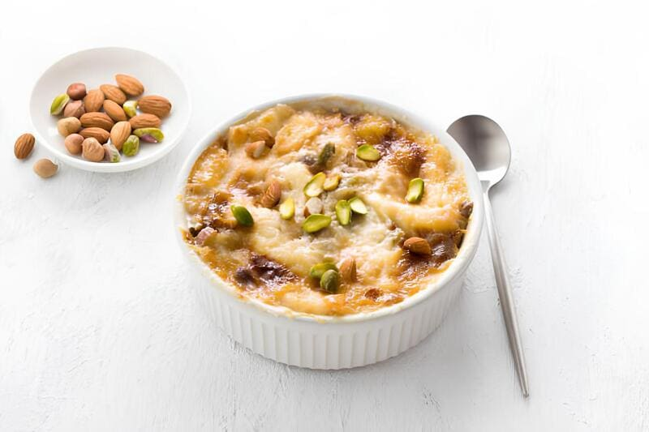

|
 |
|
Description
Often referred to as the Egyptian version of bread pudding, Om Ali is a comforting, centuries-old dessert. It features layers of golden, flaky pastry soaked in a sweetened milk bath infused with vanilla. The dish is topped with a rich layer of cream and a crunch of toasted nuts and raisins, then broiled until the top develops a beautiful, caramelized crust.
Ingredients
|
Instructions
|
Technical Notes
|
Pastry Selection:
If you don't have puff pastry, toasted croissants or palmiers (mushabbak) are excellent substitutes that add a buttery depth to the dish. |
Serving Suggestion:
Om Ali is best enjoyed immediately while warm. If prepared ahead of time, the pastry will absorb all the milk, making it less creamy. |